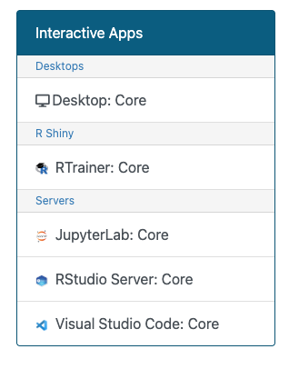
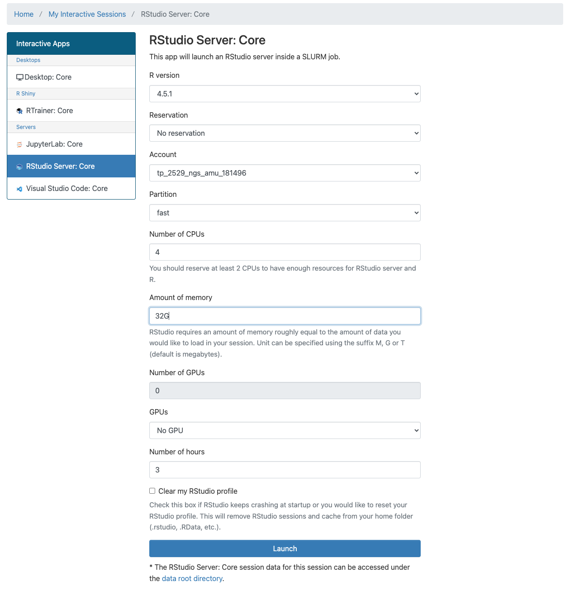
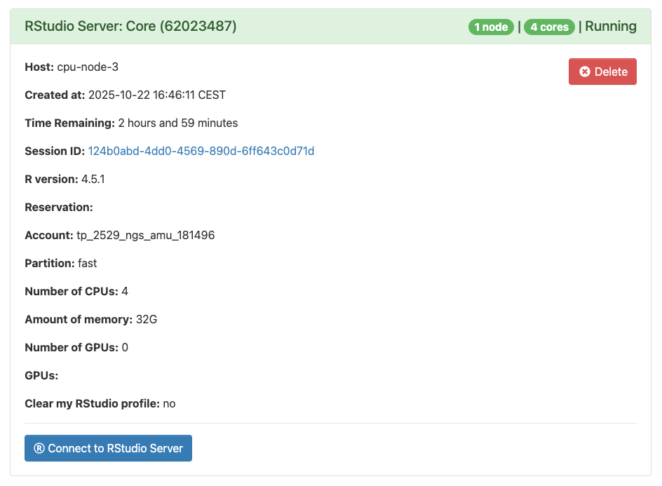

TD: Introduction et pratique de R et Bioconductor
Ghislain Bidaut, Plateforme Cibi, CRCM, Aix-Marseille Université
Novembre 2025

Introduction
Ce TD va nous permettre d’aborder l’utilisation de R pour la manipulation de données et de fichiers. Nous aborderons également l’utilisation de Bioconductor.
Ce TD est librement inspiré de la formation R proposée par Justine Guégan (https://pf-bb.github.io/Formation-Rrrr/), ainsi que d’un TP proposé par Jacques Van Helden (https://jvanheld.github.io/stat1/practicals/02_yeast_annotations/02_yeast_annotations.html)
Organisation
Nous allons utiliser le serveur RStudio sur l’IFB par OnDemand:
Il est souhaitable de réaliser ce TD dans un fichier
.R (Dans RStudio, Fichier -> Nouveau Fichier -> R
Script). Par exemple, dans
<mon_reperoire_de_travail>/TP_R/TP_Intro_R.R.
N’oubliez pas d’organiser votre code en sections avec des commentaires, comme, par exemple, ceci:
# Exercice 1
A <- 10
# Exercice 2
C <- 11… et de commenter votre code
# Je génère un échantillon de 20 valeurs tirées d'une loi normale
x <- rnorm(20, 0, 1)Connection au cluster de l’IFB
Connectez vous sur le cluster IFB par Ondemand: https://ondemand.cluster.france-bioinformatique.fr/pun/sys/dashboard/batch_connect/sessions
Après avoir entrés vos identifiants, vous avez la possibilité d’ouvrir un type de sessions parmi les suivants:

Choisissez “Rstudio Server: Core”
Puis entrez les paramètres suivants:

L’écran suivant apparaît:

Cliquez “Connect to RStudio”.
Allez dans le répertoire
/shared/projects/tp_2529_ngs_amu_181496
Créez vous un répertoire de travail TPXXXX avec votre
nom utilisateurs et positionnez vous dans ce
répertoire.
cd TPXXXXExercices
Exercice: Calculs simples
Calculer \(2+2\).
Calculer \(0.5.10^2 \times 0.3.10^4\)
Concaténer les chaines de caractère “J’aime” et “Linux”
Solution
# Exercice 1 - Calculs simples
2+2## [1] 40.5e4 * 0.3e4## [1] 1.5e+07paste("J'aime", "Linux")## [1] "J'aime Linux"Exercice: Variables et environnement
Reprendre les calculs précédents et les stocker dans des variables, respectivement
a1,a2etstr_linux.Où retrouver ces objets avec l’interface RStudio ?
Solution
# Exercice 2 - variables et environnement
a1 <- 2+2
a2 <- 0.5e4 * 0.3e4
str_linux <- paste("J'aime", "Linux")
# On peut voir les objets dans la fenêtre "environment" sous RStudioExercice: Extraction d’éléments d’un vecteur
Soit
genel <- c("ALK", "HRAS", "BRAD", "AKT1", "EGFR")
Quelle est la longueur du vecteur ? indice :
lengthEssayer de faire
genel[1:3]. Qu’obtenez-vous ?Créer un nouveau vecteur
gl2ne contenant que “HRAS” et “EGFR”.Essayer de faire
genel[-1]. Qu’obtenez-vous ?Trier par ordre alphabétique. indice :
sortAjouter les gènes “PIK3CA” et “KIT” au vecteur
gl2
Solution
# Exercice - Extraction d'éléments
# ----------------------------------
gl <- c("ALK", "HRAS", "BRAD", "AKT1", "EGFR")
# 1
length(gl)## [1] 5# 2
gl[1:3]## [1] "ALK" "HRAS" "BRAD"# 3
gl2 <- c(gl[2], gl[5])
# ou
gl2 <- gl[c(2,5)]
# 4
sort(gl)## [1] "AKT1" "ALK" "BRAD" "EGFR" "HRAS"# 5
gl2 <- c(gl2, "PIK3CA", "KIT")Exercice: Facteurs
Soit un facteur
cell_type <- factor(c("C1","C2","C2","C2","C1","C2","C2","C1")).
Afficher les “niveaux” de cell_types
Calculer le nombre de “C1” et de “C2” dans
cell_typeen utilisant les fonctionswhich,lengthet des opérateurs binaires (==).Que permet de faire la fonction
table? Appliquer-la àcell_typeet décrire sa fonction.
Solution
# Exercice: Facteurs
# ---------------------
cell_type <- factor(c("C1","C2","C2","C2","C1","C2","C2","C1"))
# 1
levels(cell_type)## [1] "C1" "C2"# 2
length(which(cell_type=="C1"))## [1] 3length(which(cell_type=="C2"))## [1] 5# 3
table(cell_type)## cell_type
## C1 C2
## 3 5Exercice: Chaines de caractères
La commande paste permet de concaténer du texte.
Essayer la commande
paste("chr", 1, sep="").Créer, en une seule ligne de commande, le vecteur
chrscontenant les noms suivants : chr1, chr2, …, chr22, chrX, chrY. Indice :paste.Créer une chaîne unique
chrsjcontenant tous les champs dechrsséparés par un espace ” “. Indice :paste.Recréer un vecteur
chrs2à partir de la chainechrsj. Indice :strsplit. Vérifier s’il est identique àchrs.
### Solution
# Exercice: Chaines de caractères
# ---------------------------------
# 1
paste("chr", 1, sep="")## [1] "chr1"# 2
chrs <- paste("chr", c(seq(1, 22), "X", "Y"), sep="")
# 3
chrsj <- paste(chrs, collapse = ' ')
# 4
chrs2 <- unlist(strsplit(chrsj, " "))
identical(chrs2, chrs)## [1] TRUEExercice: Tableaux de données
Créer une liste x contenant :
une variable aléatoire gaussienne de taille 10 appelée
aun vecteur contenant uniquement des 1, de taille 10 également, appelé
b.
On peut accéder aux deux éléments de cette liste avec les commandes
x[[i]] ou x$nom_de_la_variable. Indices :
list, rnorm.
Créer un objet
yqui est la transformation de cette liste en data frame. On peut maintenant parcourir les éléments de chaque objet comme pour une matrice avec la commandey[i,j]. indice =data.frame.Créer deux objets
z1etz2contenant respectivement les 3 premières et les 3 dernières lignes dey.
Quelle est la classe de ces deux objets ?
Rajouter à la liste x un vecteur numérique contenant les entiers de 1 à 26.
Essayer de transformer de nouveau
xen data.frame. Que se passe-t-il ?
Solution
# Exercice: Tableau de données
# ----------------------------
# 1
a <- rnorm(10, mean = 0, sd = 1)
b <- rep(1, 10)
x <- list(a=a, b=b)
x$a## [1] -0.3571383 0.7329885 -0.9784500 0.1866462 -0.4247085 0.4936001
## [7] 0.1883284 1.0165352 0.5840592 -0.3217669# 2
y <- data.frame(x)
# 3
z1 <- y[1:3,]
z2 <- y[8:10,]
class(z1)## [1] "data.frame"class(z2)## [1] "data.frame"# 4
num <- seq(1:26)
x$num = num
# 5
#y <- data.frame(x)Etude de données génomique
Dans ce TP, nous allons faire des statistiques sur les gènes du
génome humain. Pour cela, nous allons utiliser un fichier GFF
d’annotations, GenCode. J’ai mis à disposition une
version réduite limitée aux annotations ENSEMBL: Vous
pouvez le récupérer sur
/shared/projects/tp_formation_amu_2024_166600/data/gencode.v38.ENSEMBL.annotation.gtf
Nous enregistrerons les manipulations dans un fichier RScript
(extension .R).
Chargement des données
Copiez le fichier dans votre répertoire de travail.
Charger le fichier dans R dans l’objet
human.gene.annotavec la fonction appropriée ou avec la fonction d’importation de RStudio.
Il n’y a pas de nom de colonnes prédéfinis pour ce fichier, nous
allons donc les ajouter à l’objet human.gene.annot avec la
fonction names, sur la base du format de fichier décrit https://www.gencodegenes.org/pages/data_format.html
Note: Un fichier GTF est une instance spéciale des fichiers GFF et donc partagent le même format.
Afficher les dimensions du tableau
human.gene.annotAfficher les premières lignes, les dernières lignes, puis ouvrez l’objet avec la fonction View, disponible dans RStudio.
Solution
#1
human.gene.annot <- read.delim("gencode.v38.ENSEMBL.annotation.gtf", comment.char="#")
colnames(human.gene.annot) = c("chromosome name", "annotation source", "feature type", "genomic start location", "genomic end location", "score(not used)", "genomic strand", "genomic phase (for CDS features)", "additional information as key-value pairs")
# 2
dim(human.gene.annot)
# 3
head(human.gene.annot)
tail(human.gene.annot)
View(human.gene.annot)Sélection d’un sous ensemble de données
Afficher la ligne 12. Afficher le nom du gène de la ligne 12.
Afficher les lignes 100 à 105, incluant les positions chromosomique, strand et le type de feature.
Afficher les types de features existantes.
Solution
# 1
human.gene.annot[12,]
human.gene.annot[12,]$`additional information as key-value pairs`
# 2
human.gene.annot[100:105, c("feature type", "genomic start location", "genomic end location", "genomic strand")]
# ou
human.gene.annot[100:105, colnames(human.gene.annot) %in% c("feature type", "genomic start location", "genomic end location", "genomic strand")]
# 3
unique(human.gene.annot[,3])Sélection d’un sous ensemble de données basé sur les valeurs du tableau
Sélectionner les lignes correspondantes aux gènes et comptez les (fonction
subset).Afficher le nombre d’entrées pour chaque feature avec
table.Afficher le nombre d’entrées pour chaque chromosome.
Faire une table de contingence en affichant le nombre de chaque feature pour chaque chromosome (Utiliser la fonction
table)
Solution
# 1
nrow(human.gene.annot[human.gene.annot$`feature type`=="gene", ])
# ou
nrow(subset(human.gene.annot, `feature type` == "gene"))
# 2
table(human.gene.annot$`feature type`)
# 3
table(human.gene.annot$`chromosome name`)
# 4
table(human.gene.annot$`chromosome name`, human.gene.annot$`feature type`)
# ou
feature.count.table <- table(human.gene.annot[, c("chromosome name", "feature type")])
feature.count.tableManipulation d’un tableau
Ajouter une colonne length au tableau
human.gene.annot, définie comme étant la différence entre
les colonnes startet end.
Solution
length = human.gene.annot$`genomic end location` - human.gene.annot$`genomic start location`
summary(length)
human.gene.annot$length = length
View(human.gene.annot)Plot de données
Faire un histogramme représentant la distribution des longueurs des gènes (fonction
hist).Faire un plot représentant le nombre de gènes par chromosome (fonction
barplot).
Note: En cas d’absence de fonctionnalités graphiques sur votre machine, il est possible de générer des graphes de la manière suivante:
# Exemple: pour générer un fichier PDF:
pdf("mon fichier.pdf")
hist(rnorm(100))
dev.off()Solution
#1
human.gene.annot.genefeature <- subset(human.gene.annot, `feature type` == "gene")
hist(log10(human.gene.annot.genefeature$length), breaks = 100)
# 2
barplot(table(human.gene.annot.genefeature$`chromosome name`))Paramètres descriptifs
Extraire la moyenne, écart type, valeurs min et max des longueurs de
gènes pour le génome total (feature == "gene")
Solution
summary(human.gene.annot.genefeature$length)Data sheets
DataSheet Base R: https://github.com/rstudio/cheatsheets/blob/main/base-r.pdf
DataSheet RStudio:: https://github.com/rstudio/cheatsheets/blob/main/rstudio-ide.pdf
DataSheet “tout”: https://github.com/rstudio/cheatsheets/tree/main
################################################################
####### Correction TD Partie 3: Manipulation d'objets
###############################################################@
# Exercice 1 - Extraction d'éléments
# ----------------------------------
gl <- c("ALK", "HRAS", "BRAD", "AKT1", "EGFR")
# 1
length(gl)
# 2
gl[1:3]
# 3
gl2 <- c(gl[2], gl[5])
# ou
gl2 <- gl[c(2,5)]
# 4
sort(gl)
# 5
gl2 <- c(gl2, "PIK3CA", "KIT")
# Exercice 2: Facteurs
# ---------------------
cell_type <- factor(c("C1","C2","C2","C2","C1","C2","C2","C1"))
# 1
levels(cell_type)
# 2
length(which(cell_type=="C1"))
length(which(cell_type=="C2"))
# 3
table(cell_type)
# Exercice 3: Chaines de caractères
# ---------------------------------
# 1
paste("chr", 1, sep="")
# 2
chrs <- paste("chr", c(seq(1, 22), "X", "Y"), sep="")
# 3
chrsj <- paste(chrs, collapse = ' ')
# 4
chrs2 <- unlist(strsplit(chrsj, " "))
identical(chrs2, chrs)
# Exercice 4: Tableau de données
# ----------------------------
# 1
a <- rnorm(10, mean = 0, sd = 1)
b <- rep(1, 10)
x <- list(a=a, b=b)
x$a
# 2
y <- data.frame(x)
# 3
z1 <- y[1:3,]
z2 <- y[8:10,]
class(z1)
class(z2)
# 4
num <- seq(1:26)
x$num = num
# 5
y <- data.frame(x)
# Impossible: nombre de lignes différents##########################################################@##############
# Correction TD Partie 4 : Etude de données génomiques
#########################################################################
# Exercice 1: Chargement des données
# 1
# Dans bash:
gunzip gencode.v38.ENSEMBL.annotation.gtf.gz
# Dans R:
human.gene.annot <- read.delim("gencode.v38.ENSEMBL.annotation.gtf", comment.char="#")
names(human.gene.annot) = c("chromosome name", "annotation source", "feature type", "genomic start location", "genomic end location", "score(not used)", "genomic strand", "genomic phase (for CDS features)", "additional information as key-value pairs")
# 2
dim(human.gene.annot)
# 3
head(human.gene.annot)
tail(human.gene.annot)
View(human.gene.annot)
# Exercice 2: Sélection d'un sous-ensemble de données
# 1
human.gene.annot[12,]
# 2
human.gene.annot[100:105,]
# 3
unique(human.gene.annot[,3])
# Exercice 3: selection d'un sous ensemble basé sur les valeurs du tableau
# 1
nrow(human.gene.annot[human.gene.annot$`feature type`=="gene", ])
# ou
nrow(subset(human.gene.annot, `feature type` == "gene"))
# 2
table(human.gene.annot$`feature type`)
# 3
table(human.gene.annot$`chromosome name`)
# 4
table(human.gene.annot$`chromosome name`, human.gene.annot$`feature type`)
# ou
feature.count.table <- table(human.gene.annot[, c("chromosome name", "feature type")])
feature.count.table
# conversion table vers dataframe
feature.count.matrix <- (apply(as.matrix(feature.count.table), 2 , as.numeric))
rownames(feature.count.matrix) <- rownames(feature.count.table)
# Exercice 4: Manipulation d'un tableau
# 1
length = human.gene.annot$`genomic end location` - human.gene.annot$`genomic start location`
summary(length)
human.gene.annot$length = length
View(human.gene.annot)
# Exercice: Plot
#1
human.gene.annot.genefeature <- subset(human.gene.annot, `feature type` == "gene")
hist(log10(human.gene.annot.genefeature$length), breaks = 100)
# 2
barplot(table(human.gene.annot.genefeature$`chromosome name`))
# Exercice: Paramètres descriptifs
# 1
summary(human.gene.annot.genefeature$length)

Cette œuvre est mise à disposition selon les termes de la
Licence
Creative Commons:
Attribution - Pas d’Utilisation Commerciale -
Pas de Modification 4.0 International (CC BY-NC-ND 4.0).